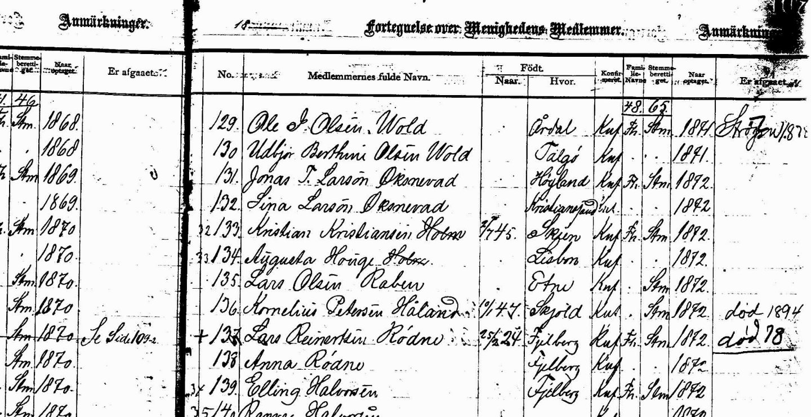

|
*Record of Parish
Membership.
Member's full name: 129. Ole J. Olsen Wold
| where
born: Årdal | Konfirmed
| ref. | when accepted: 1871 |
...
130.
Udbjør Berthine Olsen Wold | where born:
Talgø | Konfirmed |
ref. | when accepted: 1871 | ...
(*From the Palestine Lutheran congregation, near Slater, Iowa, original membership records.) 
|